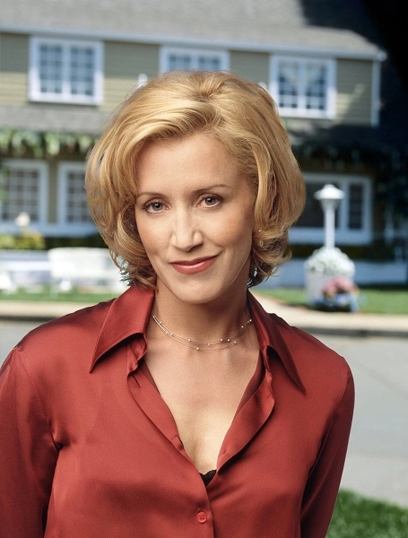

Главная | Персонажи | Сюжет | Тест
| Фото | Персонаж | Характер |
|---|---|---|
|
|
Сьюзан Майер | Добрая, немного неловкая, эмоциональная. Часто попадает в смешные ситуации, но всегда старается поступать по совести. |
| Бри Ван де Камп | Аккуратная, строгая, любит порядок и идеальность. Иногда кажется холодной, но внутри она очень переживает за семью. | |
| Габриэль Солис | Красивая, уверенная в себе, любит роскошь. Сначала кажется эгоистичной, но постепенно раскрывается как заботливый человек. | |
|
 |
Линетт Скаво | Сильная, умная и практичная. Она много заботится о семье и часто берёт ответственность на себя. |